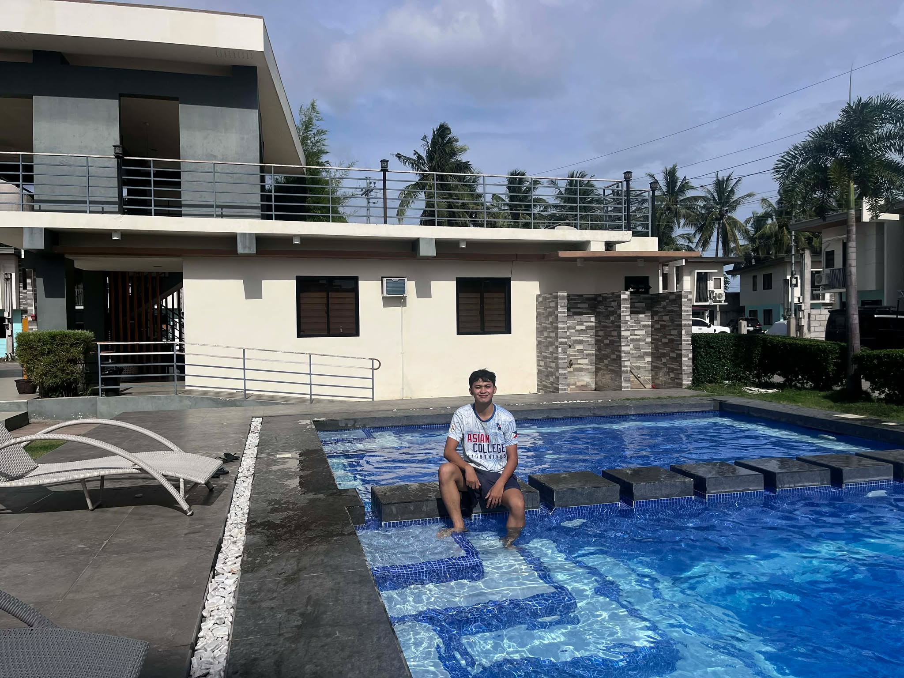
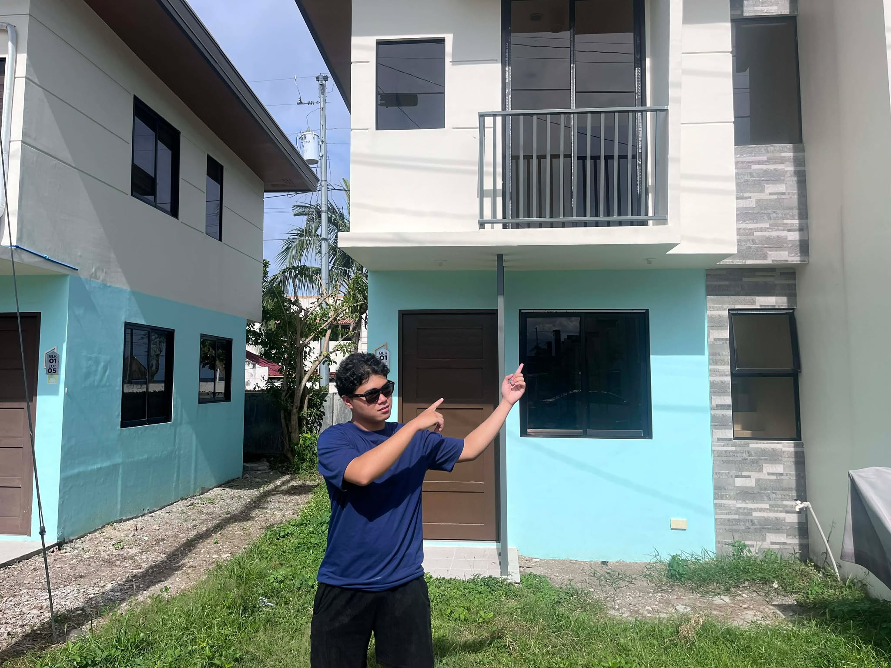
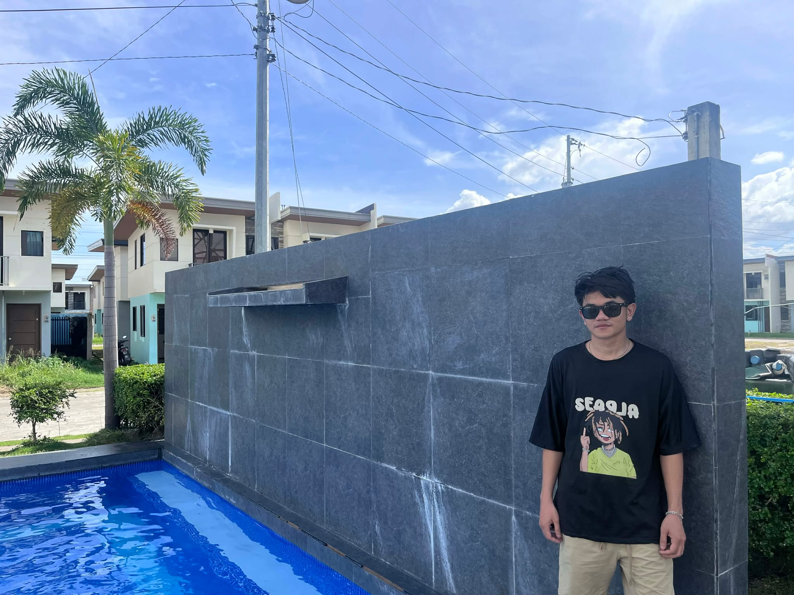
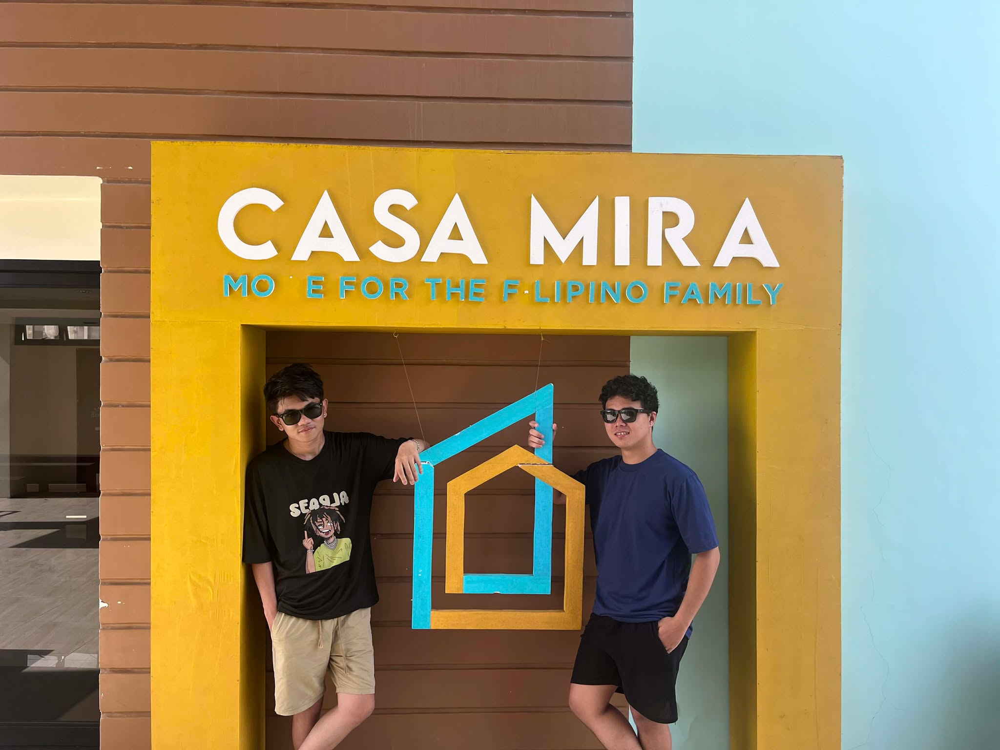
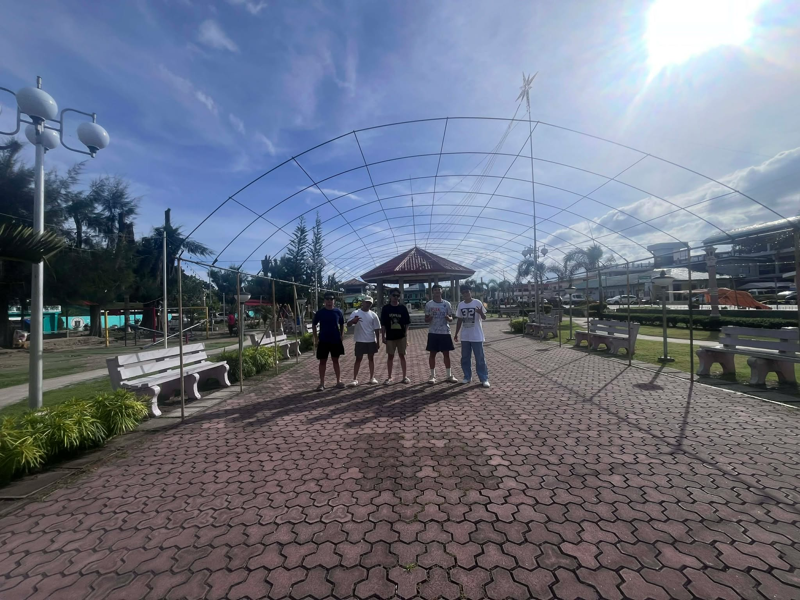
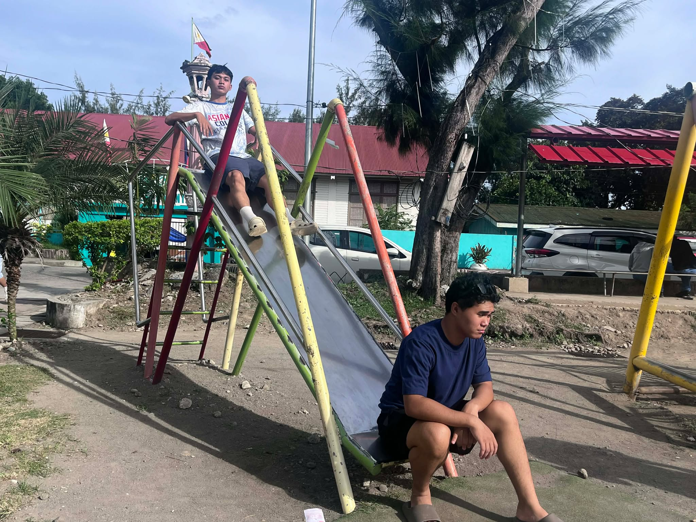
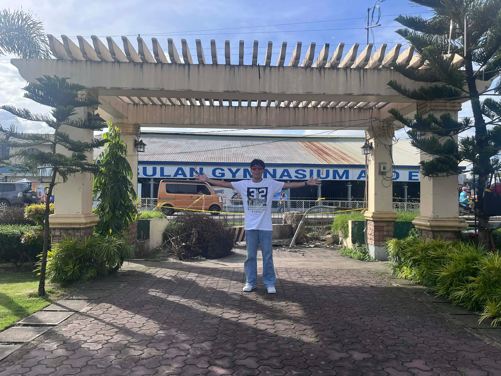
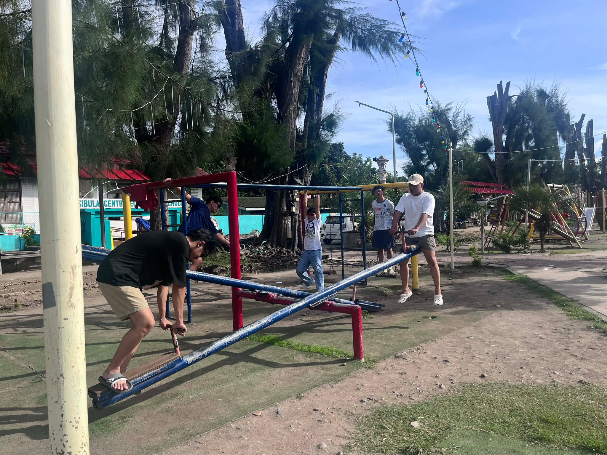
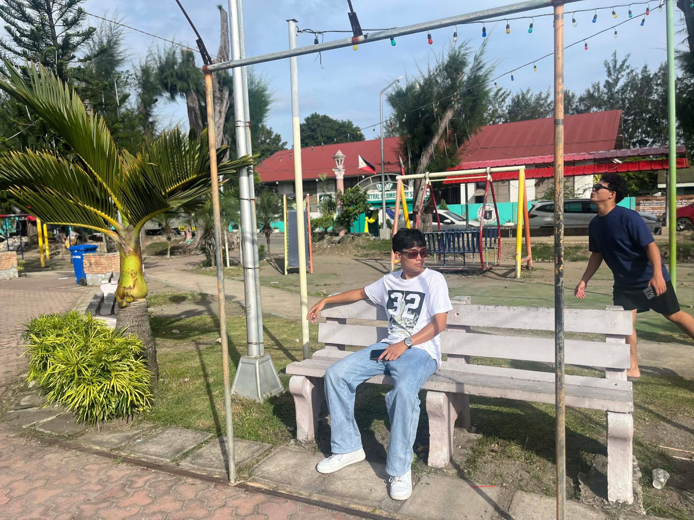
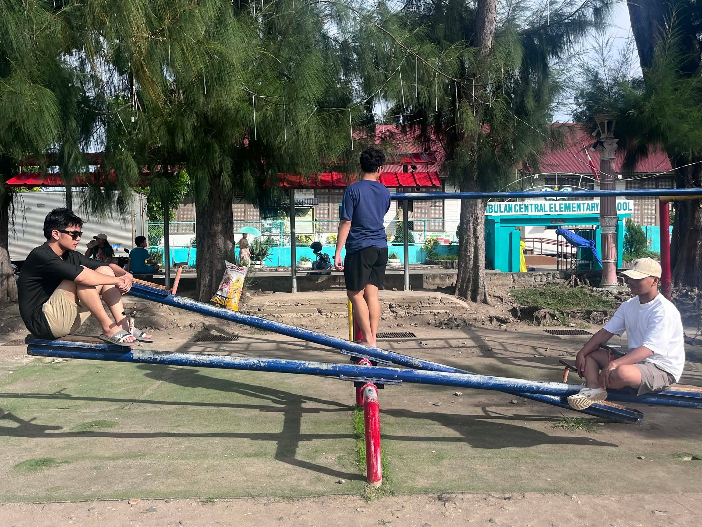

Explore the beauty and culture of Sibulan through these stunning locations.
Casa Mira Coast Sibulan
Casa Mira Coast is an economic housing development located along the coast of Sibulan.
It offers families a peaceful living environment with scenic sea views, modern community
facilities, and safe residential streets. Residents enjoy easy access to public transportation,
schools, and nearby markets. The development has become a model for affordable housing,
providing comfortable homes without sacrificing quality or convenience. Whether you are
visiting or planning to settle here, Casa Mira Coast showcases the harmony of community
living and natural beauty.




Sibulan Public Plaza
The Sibulan Public Plaza serves as the social and cultural hub of the town.
It is a well-maintained open space surrounded by lush greenery, benches, and monuments
that honor the town’s history. Locals frequently gather here for leisurely strolls,
community events, and weekend markets. Visitors can experience the warmth
of the community while enjoying the relaxing atmosphere, making the plaza a must-visit
destination in Sibulan.






San Antonio de Padua Parish
San Antonio de Padua Parish is one of Sibulan’s most historic and revered churches.
It is renowned for its serene environment, elegant traditional Catholic architecture,
and intricate interior design. The parish serves as the spiritual center for residents,
hosting regular masses, weddings, and community gatherings. Visitors are drawn to the
peaceful ambiance, beautiful stained glass, and the sense of history that surrounds
the church grounds. It also plays a central role during town festivals and religious events.